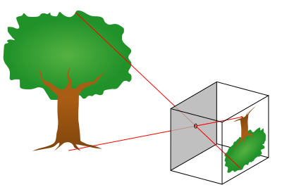
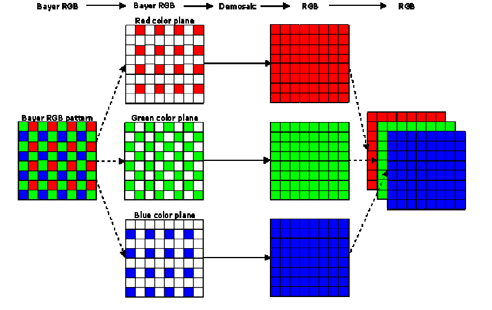
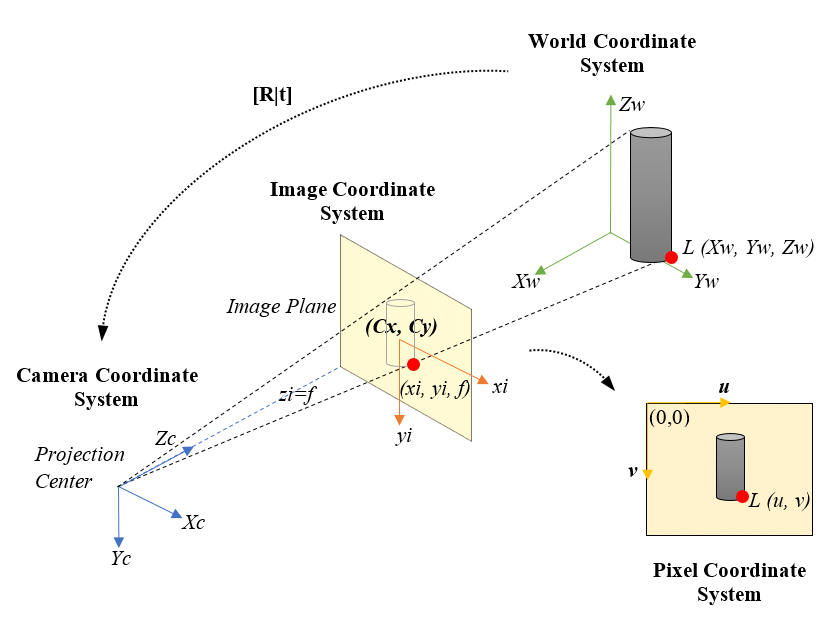
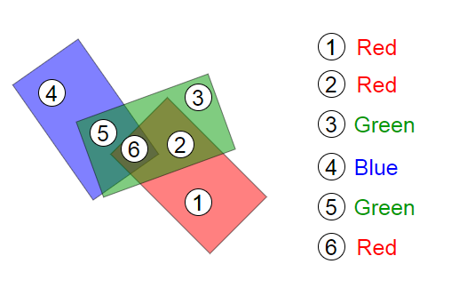
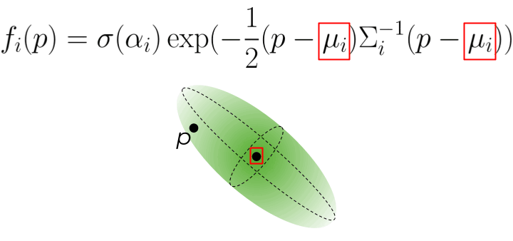
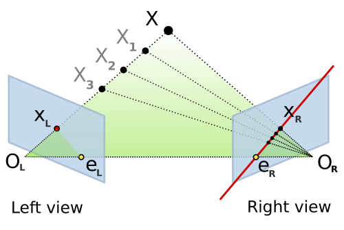
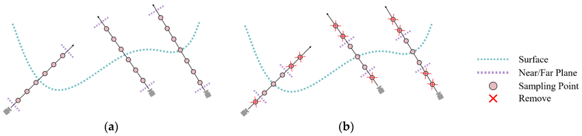

Table of Contents
Introduction
Have you ever wondered how your favorite video game creates stunning 3D worlds, or how your smartphone can capture a scene and reconstruct it in three dimensions? The journey from the real world to pixels on your screen involves a fascinating interplay of mathematics, computer graphics, and modern machine learning. In this blog, we'll explore the complete pipeline of 3D rendering and reconstruction from how cameras capture light to how neural networks can generate photorealistic 3D scenes.
We'll start with the basics of 2D image formation, build up to 3D representations like meshes and point clouds, dive into rendering techniques that bring these models to life on your screen, and finally explore cutting-edge reconstruction methods that can create 3D models from photographs. Along the way, we'll see real demos and understand the mathematics that makes it all possible.
2D Image Capture & Rendering
Why Start with 2D Images?
Before we can understand 3D, we need to grasp how computers see the world in 2D. Digital vision systems begin by capturing light on a 2D sensor, much like how your eye focuses light onto your retina. Understanding 2D sampling, quantization, and color representation is crucial before we add that third dimension of depth. Think of it this way: a 3D model is useless if we can't project it onto a 2D screen or photograph it with a 2D camera!
Light, Optics, and Sensors
Everything begins with light. When we look at a scene, every point in space is emitting or reflecting light in various directions. We describe this mathematically as radiance \( L(\mathbf{x}, \omega) \), which tells us how much light is traveling from position \( \mathbf{x} \) in direction \( \omega \). A camera's job is to capture this radiance and convert it into a 2D image.
The pinhole camera model: light rays pass through a single point and project onto the image plane
The simplest model of a camera is the pinhole camera. Imagine a box with a tiny hole in the front light from the scene passes through this hole and projects an inverted image on the back wall. This model has infinite depth of field (everything is in focus) and no lens aberrations. Real cameras use lenses to gather more light and control focus, but the pinhole model captures the essence of projection: 3D points in the world map to 2D points on the sensor.
From Continuous Irradiance to Digital Pixels
When light hits a camera sensor, it's a continuous signal there are infinitely many points in space and time. But computers need discrete numbers, so the camera samples this continuous signal in three ways:
- Spatial sampling: The sensor is divided into a grid of pixels, each collecting light from a specific region of the image.
- Temporal sampling: The camera opens its shutter for a fixed exposure time, integrating all the light that arrives during that period.
- Color sampling: Most sensors have red, green, and blue color filters arranged in a pattern (usually the Bayer pattern) to capture different wavelengths.
After sampling, the analog signal (electrical charges from absorbed photons) is converted to digital numbers through quantization. This process inevitably introduces small errors and noise that's why low-light photos look grainy!
Demosaicing, Color Spaces, and Gamma
The Bayer filter pattern and demosaicing process
Here's where things get interesting. Most camera sensors capture only one color per pixel either red, green, or blue, arranged in what's called a Bayer pattern. To create a full-color image, the camera must use a process called demosaicing to interpolate the missing color values at each pixel.
Furthermore, the relationship between the physical light intensity and the stored pixel values isn't linear. Cameras apply gamma correction to match how human vision perceives brightness. The standard sRGB color space includes this gamma curve, ensuring images look natural on our screens. Without gamma correction, images would appear too dark in shadows and washed out in highlights!
So... How About 3D?
Now that we understand how 2D images are formed, we can ask the bigger question: cameras see projections of 3D geometry onto 2D planes. How do we represent, manipulate, and render that 3D geometry? How do we go from triangles and volumes to pixels on a screen? Let's dive into the fascinating world of 3D representations!
3D Representations
3D Representations at a Glance
When it comes to representing three-dimensional objects in a computer, we have several options, each with its own strengths and weaknesses:
- Point Clouds: The simplest representation just a collection of 3D coordinates \((x, y, z)\). These are usually generated by sensors like LiDAR or from multi-view reconstruction. Point clouds are lightweight but don't explicitly define surfaces or connectivity.
- Meshes: Vertices connected into faces, typically triangles. This is the workhorse of computer graphics! Meshes explicitly represent surfaces and are efficient to render. Game engines and 3D modeling software heavily rely on triangle meshes.
- Voxels: A regular 3D grid where each cell (voxel) stores occupancy or color information. Think of it as 3D pixels. While intuitive and easy to work with, voxels can be memory-intensive for high-resolution scenes.
- Implicit Fields: Instead of explicitly storing geometry, we use a continuous function \( f(\mathbf{x}) \) that defines surfaces implicitly. For example, a Signed Distance Field (SDF) gives the distance to the nearest surface, with negative values inside the object. This representation is smooth and resolution-independent but requires evaluation at query points.
One of the most common challenges is converting between these representations. For instance, how do we go from a scattered point cloud to a connected mesh surface? This is where Delaunay triangulation comes in!
From Points to Surfaces: Delaunay Triangulation
Imagine you have a bunch of points scattered in space maybe from a 3D scanner or a structure-from-motion reconstruction. You want to connect these points into triangles (in 2D) or tetrahedra (in 3D) to form a mesh. But not just any triangulation will do we want one that creates well-shaped, non-overlapping elements.
The Delaunay triangulation provides exactly this. Its key property is beautifully simple: no point should lie inside the circumcircle (or circumsphere in 3D) of any triangle (or tetrahedron). This criterion has profound implications:
- It produces non-overlapping, well-shaped triangles
- It avoids skinny, degenerate triangles that cause numerical instability
- It maximizes the minimum angle among all possible triangulations
- In 3D, the boundary of the Delaunay tetrahedralization gives us a mesh surface
How Delaunay Triangulation Works
The most popular algorithm for computing Delaunay triangulations is the Bowyer–Watson incremental insertion algorithm. Here's how it works:
- Initialization: Start with a large "super-triangle" (or tetrahedron in 3D) that encloses all input points.
- Incremental Insertion: Add points one at a time. For each new point \( p \):
- Find all triangles whose circumcircle contains \( p \) these violate the Delaunay property
- Remove these triangles; they form what's called the cavity
- Connect \( p \) to all vertices on the boundary of the cavity, creating new Delaunay triangles
- Cleanup: Remove all triangles connected to the initial super-triangle vertices. What remains is your Delaunay triangulation!
Let's see this process in action with a step-by-step animation:
Delaunay triangulation: watch as points are incrementally inserted and the triangulation maintains the empty circumcircle property
In the video above, you can see how each new point (shown in green) is added to the triangulation. The red dashed circles show circumcircles, and red triangles indicate the cavity that gets removed. The algorithm then reconnects the green point to the cavity boundary, maintaining the Delaunay property. This local update makes the algorithm very efficient we don't need to recompute the entire triangulation for each new point!
Rendering on the Screen
The Graphics Pipeline: From 3D to 2D
Now that we have 3D representations, we need to render them onto a 2D screen. Modern graphics hardware (your GPU) uses a highly optimized pipeline that transforms millions of triangles into pixels at incredible speeds often 60 times per second or faster!
The camera model for rendering: projecting 3D objects onto a 2D image plane
The rendering pipeline consists of several key stages, each performing a specific transformation. Let's walk through them:
1. Model Transform: Positioning Objects in the World
First, we place our 3D objects in world space using a model transform matrix \( M \). This is how we position, rotate, and scale objects. For example, if you want to place a car model at a specific location and angle in your game world, you'd apply a model transform:
where \( \mathbf{p}_{\text{local}} \) is a vertex in the object's own coordinate system, and \( \mathbf{p}_{\text{world}} \) is its position in world space.
2. View Transform: Looking at the World
Next, we apply a view transform \( V \) that represents the camera's position and orientation. This transforms coordinates from world space to camera space (also called "eye space" or "view space"). The camera is now at the origin, looking down the negative \( z \)-axis:
The view matrix is typically constructed from the camera's position, the point it's looking at, and an "up" direction. Most graphics libraries provide a lookAt function that builds this matrix for you.
3. Projection Transform: Creating Perspective
Now comes the magic: we use a projection matrix \( P \) to map 3D camera-space coordinates into a normalized 2D viewing volume. There are two main types of projection:
- Perspective projection: Objects farther away appear smaller (like real vision). This is what makes 3D scenes look realistic. The projection transform includes a division by the \( z \)-coordinate (depth), creating the perspective effect.
- Orthographic projection: Parallel lines stay parallel, and objects don't shrink with distance. Useful for technical drawings and 2D games.
The perspective projection matrix looks like this (for a symmetric frustum):
where \( \text{fov} \) is the field of view angle, \( \text{aspect} \) is the aspect ratio, and \( n, f \) are the near and far clipping planes.
4. Viewport Transform and Rasterization
After projection, we perform perspective division by dividing by the \( w \) component (which stores the original \( z \) value). This gives us normalized device coordinates (NDC) in the range \([-1, 1]\). Finally, the viewport transform scales these coordinates to actual pixel positions on your screen.
Now comes the heavy lifting: rasterization. The GPU determines which pixels are covered by each triangle and runs shaders to compute their final colors. We'll dive deep into this process in the next section!
Depth Testing and the Z-Buffer
When multiple triangles overlap the same pixel, how does the GPU know which one is in front? Enter the depth buffer (z-buffer). For each pixel, the GPU stores the depth of the closest surface. When rasterizing a new triangle, if its depth at a pixel is less than the current depth buffer value, we update both the color and depth. Otherwise, we discard it (it's hidden behind something else).
Depth buffer artifacts can occur with insufficient precision or incorrect near/far planes
This simple algorithm has one issue: z-fighting. When two surfaces are at almost the same depth, floating-point precision errors can cause flickering as the GPU can't consistently determine which is in front. The solution? Ensure adequate depth buffer precision (24 or 32 bits) and carefully choose your near and far clipping planes to maximize depth resolution where it matters.
Triangle Rasterization
Filling Triangles: The Heart of Real-Time Graphics
Triangle rasterization is the workhorse of modern graphics. Every 3D model you see in a game or 3D application is broken down into thousands (or millions) of triangles, and each triangle needs to be converted into pixels. This process happens billions of times per second on your GPU!
The basic problem is this: given a triangle defined by three 2D vertices (after projection), determine which pixels lie inside it and what color each pixel should be. Let's break down how this works.
Barycentric Coordinates: Smooth Interpolation Across Triangles
Before we can shade a pixel, we need to interpolate attributes (like colors, texture coordinates, or normals) across the triangle's surface. The elegant solution is barycentric coordinates. For any point \( \mathbf{p} \) inside a triangle with vertices \( \mathbf{v}_0, \mathbf{v}_1, \mathbf{v}_2 \), we can express it as:
where \( w_0 + w_1 + w_2 = 1 \) and all \( w_i \geq 0 \) if \( \mathbf{p} \) is inside the triangle. These weights \( (w_0, w_1, w_2) \) are the barycentric coordinates, and they have a beautiful property: they tell us how much influence each vertex has on point \( \mathbf{p} \). A point near \( \mathbf{v}_0 \) will have \( w_0 \) close to 1 and the others near 0.
To interpolate any attribute \( A \) (like color or texture coordinates) stored at the vertices, we simply use:
But There's a Catch: Perspective-Correct Interpolation!
Here's where things get tricky. The simple linear interpolation above (called affine interpolation) works fine in 2D, but in 3D with perspective projection, it gives incorrect results! Why? Because points that are equally spaced in 3D don't map to equally spaced points in 2D screen space after perspective projection.
The solution is perspective-correct interpolation. Instead of interpolating attributes directly, we interpolate \( A/z \) (attribute divided by depth) and \( 1/z \), then divide:
This might seem like a strange mathematical trick, but it's essential for correct texture mapping! Let's see the difference:
Left: Naive affine interpolation produces warped textures. Right: Perspective-correct interpolation maintains proper texture appearance
Notice how the left side (naive interpolation) produces a warped checkerboard pattern that doesn't correctly represent the 3D surface? The right side uses perspective-correct interpolation and looks much more realistic. This is why modern GPUs always use perspective-correct interpolation for texture coordinates and other varying attributes.
Shading Models: From Flat to Phong
Once we know which pixels belong to a triangle and have interpolated the necessary attributes, we need to compute the final color. This is where shading models come in. Let's explore three classic approaches:
Flat Shading
The simplest approach: compute one color for the entire triangle based on its normal vector. This is fast but produces faceted appearance, clearly showing individual triangles. It was common in early 3D games but looks quite dated now.
Gouraud Shading (Smooth Shading)
Compute lighting at each vertex, then interpolate the resulting colors across the triangle using barycentric coordinates. This is much smoother than flat shading but can miss specular highlights that would appear in the middle of triangles.
Phong Shading
The gold standard for quality. Store normal vectors at each vertex and interpolate these normals across the triangle. Then compute lighting per-pixel using the interpolated normal. This captures highlights accurately but requires more computation.
The Phong illumination model itself combines three terms:
where:
- \( k_a I_a \) is ambient lighting (constant base illumination)
- \( k_d I_d (\mathbf{N} \cdot \mathbf{L}) \) is diffuse lighting (Lambertian reflection)
- \( k_s I_s (\mathbf{R} \cdot \mathbf{V})^n \) is specular lighting (shiny highlights)
- \( \mathbf{N} \) is the surface normal, \( \mathbf{L} \) is the light direction, \( \mathbf{R} \) is the reflection direction, and \( \mathbf{V} \) is the view direction
Let's see these shading models in action on a textured sphere:
Three shading models compared: Flat (left), Lambert/Diffuse (center), and Phong with specular highlights (right)
The difference is striking! Flat shading looks blocky, Lambert shading is smooth but matte, and Phong shading adds those realistic specular highlights that make surfaces look shiny and three-dimensional.
Putting It All Together: The Full Pipeline
Modern GPUs execute this entire pipeline in parallel for millions of triangles. Vertex shaders transform geometry, rasterizers determine pixel coverage, and fragment shaders compute final colors. The z-buffer handles visibility, and frame buffers store the result. All of this happens in mere milliseconds, repeated 60+ times per second to create smooth, interactive 3D experiences!
Triangle rasterization in action: a simple pyramid with each face drawn in a different color
Gaussian Splatting
A Different Approach to Rendering
So far, we've focused on traditional triangle rasterization the method that has dominated computer graphics for decades. But what if instead of triangles, we represented surfaces as collections of small, fuzzy "splats"? This is the idea behind Gaussian splatting, an increasingly popular technique that bridges classical rendering and modern neural scene representations.
Instead of polygons with hard edges, Gaussian splats are smooth, overlapping blobs of color. Each splat is defined by a 3D position \( \boldsymbol{\mu} \), a covariance matrix \( \Sigma \) that determines its size and orientation, and a color/opacity. When rendered, these splats blend together to form a continuous surface.
What Is a Gaussian Splat?
A Gaussian splat in 3D is centered at position \( \boldsymbol{\mu} \) with a probability density function:
This might look intimidating, but it's just a 3D bell curve! The covariance matrix \( \Sigma \) determines how the splat is stretched and oriented in space. Near the center \( \boldsymbol{\mu} \), the Gaussian has high intensity, smoothly falling off to zero as we move away.
Projecting Gaussians to the Screen
Here's the beautiful part: when we project a 3D Gaussian through a perspective camera onto the 2D image plane, it remains a Gaussian just now a 2D one! The projection transforms the 3D covariance \( \Sigma \) into a 2D covariance matrix \( \Sigma' \) that describes an ellipse on the screen.
A 3D Gaussian projects to a 2D elliptical splat on the screen
The math works out elegantly using the Jacobian \( J \) of the projection transformation:
This 2D covariance matrix defines an ellipse. We can compute its major and minor axes (the eigenvalues \( \lambda_1, \lambda_2 \)) and orientation (from the eigenvectors) to render the splat as a 2D elliptical blob.
Rendering Gaussian Splats
To render a scene with Gaussian splats, we:
- Project each 3D Gaussian to a 2D ellipse on the screen
- Sort the splats from back to front (based on their depth/distance from camera)
- Alpha-blend them together using the formula:
\[ C = \sum_{i=1}^{N} c_i \alpha_i \prod_{j=1}^{i-1} (1 - \alpha_j) \]where \( c_i \) is the color of splat \( i \), \( \alpha_i \) is its opacity, and the product term ensures closer splats occlude those behind them.
Let's see Gaussian splatting in action:
Gaussian splatting: each face of the pyramid is represented by small Gaussian splats that blend together to form a smooth surface. Selected splats are shown as translucent ellipses.
Notice how the splats create a smooth, continuous appearance even though we're essentially rendering thousands of small, overlapping blobs. This representation has several advantages over traditional triangle meshes:
- Smooth gradients: No sharp triangle edges; everything blends naturally
- Flexible detail: We can add splats where needed for fine detail and use fewer in smooth regions
- Differentiable: The entire rendering process can be differentiated with respect to splat parameters, making it perfect for optimization with neural networks
- View-dependent effects: Splats can have view-dependent colors, enabling representation of reflections and other complex light interactions
Culling, Splitting, and Pruning
When working with millions of Gaussian splats (common in real applications), we need efficient management strategies:
- Culling: Discard splats that are outside the camera's field of view or too far away to matter. This is done via frustum culling using the splat's 3D position and extent.
- Splitting/Densification: If a region needs more detail, we can split large splats into multiple smaller ones. This is often done adaptively during training when reconstructing scenes from images.
- Pruning: Remove splats with very low opacity (\( \alpha \approx 0 \)) or that contribute negligibly to the final image. This keeps the representation compact and efficient.
Gaussian Splatting for 3D Reconstruction
Now here's where things get really exciting. We've seen how to render Gaussian splats, but what about using them to reconstruct 3D scenes from photographs? This is where Gaussian splatting truly shines, combining the best of explicit representations with differentiable optimization.
Dad joke time: How to ENHANCE A sparse 3d MODEL using gaussians?
Building on Structure from Motion
Remember our discussion of Structure from Motion? It gives us a sparse point cloud and camera poses. Gaussian Splatting takes this sparse skeleton and turns it into a photorealistic, dense representation. Here's how it works:
Initialization from SfM
Each point in the sparse SfM point cloud becomes the center \( \boldsymbol{\mu}_i \) of a 3D Gaussian. We initialize:
- Position: Set to the SfM 3D point location
- Covariance: Start with a small isotropic Gaussian (sphere) or estimate from local point density
- Color: Sample from the images where this feature was observed
- Opacity: Start at moderate values (around 0.5)
Because we're initializing from SfM, we start from a geometrically accurate configuration. And crucially, we already know all the camera poses this eliminates the difficult pose estimation problem during optimization!
Differentiable Optimization
Here's the magic: the entire Gaussian rendering pipeline (project, sort, alpha-blend) is fully differentiable. This means we can:
- Render training views by splatting the Gaussians
- Compare rendered images to the actual photographs
- Compute gradients of the image loss with respect to ALL Gaussian parameters (\( \boldsymbol{\mu}, \Sigma, \mathbf{c}, \alpha \))
- Update parameters using gradient descent (typically Adam optimizer)
The loss function combines L1 loss and D-SSIM (a perceptual similarity metric):
This is exactly like training a neural network, except instead of optimizing network weights, we're optimizing the positions, shapes, colors, and opacities of millions of Gaussians!
Adaptive Densification
Starting from sparse SfM points (say 10K), we need to densify to cover the entire scene. During optimization, the algorithm adaptively adjusts the number of Gaussians:
- Split large Gaussians: If a Gaussian is too large but still has high gradients (it's trying to represent detail), split it into two smaller Gaussians. Each child can then specialize.
- Clone Gaussians: In regions with high reconstruction error but few Gaussians, clone nearby Gaussians to fill the gap.
- Prune low-opacity Gaussians: Remove Gaussians with \( \alpha \approx 0 \) that don't contribute to the image.
Through these operations, the representation grows from ~10K initial points to hundreds of thousands or millions of Gaussians, creating a truly dense scene representation.
Spherical Harmonics for View Dependence
To capture view-dependent appearance (specular highlights, reflections), we can't just store one RGB color per Gaussian. Instead, we store spherical harmonic coefficients that represent how color varies with viewing direction:
where \( Y_l^m \) are spherical harmonic basis functions (think of them like Fourier basis functions, but on a sphere), and \( c_{lm} \) are learned coefficients. Using degree 3 (\( L=3 \), giving 16 coefficients per RGB channel) captures most view-dependent effects while remaining compact.
Training and Convergence
The typical training process runs for 20K-30K iterations and takes just 10-30 minutes on a modern GPU (compared to hours or days for NeRF). The pipeline is:
- Initialize Gaussians from SfM point cloud
- For each iteration:
- Sample a training view
- Render by projecting and blending Gaussians
- Compute loss vs ground truth image
- Backpropagate and update parameters
- Every 100-500 iterations: densify/prune
- Final result: 100K-1M+ optimized Gaussians
Why Is Gaussian Splatting So Fast?
Compared to NeRF, Gaussian Splatting achieves incredible speed advantages:
- Explicit representation: Gaussians are stored directly in memory no need to query a neural network millions of times per image
- GPU-friendly rasterization: The project-sort-blend pipeline maps beautifully to GPU architectures and can leverage hardware rasterization
- Efficient culling: We can quickly discard Gaussians outside the view frustum using standard graphics techniques
- Real-time rendering: Once trained, rendering runs at 30-100 FPS on consumer GPUs something impossible with NeRF
Gaussian Splatting vs NeRF: The Trade-offs
Gaussian Splatting wins on:
- Training speed: 10-100× faster (minutes vs hours)
- Rendering speed: 1000×+ faster (real-time vs seconds per frame)
- Visual quality: comparable or better for most scenes
- Editability: explicit Gaussians are easier to manipulate than implicit networks
- Direct control: can add/remove/modify individual Gaussians
NeRF wins on:
- True continuity: infinite resolution, no discrete primitives
- Memory for simple scenes: network weights can be more compact than millions of Gaussians
- Some effects: very fine transparency, participating media (fog, smoke)
- Research ecosystem: enormous body of work with many specialized variants
In practice, Gaussian Splatting has become the go-to method for applications requiring real-time rendering: VR/AR experiences, game asset creation from photogrammetry, digital twins, interactive scene exploration, and more. NeRF remains valuable for offline rendering and as a research platform for exploring novel view synthesis techniques.
The key insight: by combining explicit representations (Gaussians) with differentiable rendering and gradient-based optimization, we get photorealistic quality with real-time performance. It's truly the best of both worlds!
Monocular and Multi-view 3D Reconstruction
The Inverse Problem: From 2D Images Back to 3D
So far, we've focused on rendering: taking a 3D model and projecting it to create 2D images. But what about the inverse problem? Can we take 2D photographs and reconstruct the 3D scene they depict? This is the goal of 3D reconstruction, and it's one of the most fascinating and challenging problems in computer vision.
The problem is fundamentally ill-posed: a single 2D image could correspond to infinitely many 3D scenes. Imagine looking at a photograph of a building—you can see its front face, but you have no idea how deep it is or what's on the sides and back. To resolve this ambiguity, we need either multiple views (multi-view reconstruction) or strong prior knowledge about what objects typically look like (for monocular reconstruction using AI).
Dad joke time: How to RECONSTRUCT A 3D MODEL?
Epipolar Geometry: The Foundation of Multi-View Reconstruction
When we have multiple images of the same scene from different viewpoints, we can exploit the geometric relationships between views to recover 3D structure. The key mathematical tool is epipolar geometry—the intrinsic projective geometry between two views.
Epipolar geometry: A 3D point X projects to x in the left image and x' in the right. The baseline connects the two camera centers, and epipolar lines show the constraint.
Here's the geometric setup: You have two cameras looking at the same 3D point \( \mathbf{X} \). The point projects to \( \mathbf{x} \) in the first image and \( \mathbf{x'} \) in the second. Now, the three points—the 3D point \( \mathbf{X} \) and the two camera centers \( C \) and \( C' \)—form a plane called the epipolar plane.
This plane intersects each image plane in a line—these are the epipolar lines. The crucial insight: if you see a point \( \mathbf{x} \) in the first image, the corresponding point \( \mathbf{x'} \) in the second image must lie on the epipolar line associated with \( \mathbf{x} \). This dramatically reduces the correspondence search from 2D (the entire image) to 1D (along a line)!
The Fundamental Matrix: Encoding Epipolar Geometry
The relationship between corresponding points is captured algebraically by the fundamental matrix \( F \). For any pair of corresponding points \( \mathbf{x} \) and \( \mathbf{x'} \) (in homogeneous coordinates), they satisfy:
This is the epipolar constraint. The fundamental matrix \( F \) is a 3×3 matrix with rank 2 that simultaneously encodes:
- The relative pose (rotation and translation) between the two cameras
- The intrinsic calibration parameters of both cameras
- How to compute epipolar lines: \( \mathbf{l}' = F \mathbf{x} \) gives the epipolar line in image 2 corresponding to point \( \mathbf{x} \) in image 1
We can estimate \( F \) from 8 or more point correspondences using the 8-point algorithm. In practice, we use RANSAC (Random Sample Consensus) to handle outliers—incorrect matches that violate the epipolar constraint.
The Essential Matrix: For Calibrated Cameras
If we know the camera intrinsics \( K \) and \( K' \) (focal length, principal point), we can work in normalized image coordinates. In this calibrated setting, we use the essential matrix \( E \):
The essential matrix has a beautiful, clean geometric interpretation. Given rotation \( R \) and translation \( \mathbf{t} \) from camera 1 to camera 2:
where \( [\mathbf{t}]_\times \) is the skew-symmetric cross-product matrix:
For calibrated cameras, \( E \) can be computed from just 5 point correspondences using the 5-point algorithm (versus 8 points for \( F \)). Once we have \( E \), we decompose it using SVD to extract \( R \) and \( \mathbf{t} \)—though note that the scale of translation is ambiguous (two-view geometry can only recover relative, not absolute scale).
Triangulation: Reconstructing 3D Points
Once we know the camera poses (rotation and translation), we can triangulate 3D points from their 2D correspondences. The idea is geometrically intuitive: each 2D observation defines a ray in 3D space emanating from the camera center. The 3D point lies at the intersection of these rays.

Triangulation: Rays from two camera centers theoretically intersect at the 3D point, but noise means we minimize reprojection error instead.
Linear Triangulation (DLT Method)
Given projection matrices \( P_1 \) and \( P_2 \) (which encode intrinsics and extrinsics) and corresponding image points \( \mathbf{x}_1 \) and \( \mathbf{x}_2 \), we want to find the 3D point \( \mathbf{X} \) that projects to both. The projection equations are:
where \( \sim \) means "equal up to scale" (homogeneous coordinates). For the vectors to be parallel, their cross product must be zero: \( \mathbf{x}_1 \times (P_1 \mathbf{X}) = \mathbf{0} \). Expanding this for each view gives us a linear system \( A\mathbf{X} = \mathbf{0} \):
where \( \mathbf{p}_i^{jT} \) is the j-th row of projection matrix \( P_i \). We solve this homogeneous system using SVD (Singular Value Decomposition)—the solution is the right singular vector corresponding to the smallest singular value. This gives us \( \mathbf{X} \) in homogeneous coordinates; we divide by the fourth coordinate to get the 3D point.
Optimal Triangulation: Minimizing Reprojection Error
The linear DLT method is fast but not statistically optimal. In the presence of noise (and real measurements always have noise!), the rays from each camera won't intersect perfectly. A better approach is to find the 3D point that minimizes the reprojection error:
where \( \pi(P_i \mathbf{X}) \) is the projection of \( \mathbf{X} \) through camera \( P_i \) (including perspective division), and \( d(\cdot, \cdot) \) is the Euclidean distance in the image. This is a nonlinear least-squares problem solved using methods like Levenberg-Marquardt, initialized with the DLT solution.
Important note on baselines: Triangulation is ill-conditioned when the cameras are too close together (small baseline). The rays become nearly parallel, and small measurement errors lead to huge depth errors. This is why you need good camera separation for accurate 3D reconstruction!
Photometric Consistency: The MVS Principle
So far we've talked about sparse reconstruction: triangulating feature points detected in images. But what if we want dense reconstruction—depth for every pixel, not just keypoints? This is the realm of Multi-View Stereo (MVS).
The key assumption in MVS is photometric consistency (also called the brightness constancy assumption): if two pixels in different images correspond to the same 3D surface point, they should have similar colors/intensities (ignoring changes in illumination, viewpoint-dependent effects like specularities, etc.).
Given a pixel in a reference image, we search for the corresponding pixel in other images by:
- Restricting the search to epipolar lines (1D search instead of 2D)
- Testing depth hypotheses: for each candidate depth \( d \), project the 3D point at that depth into other views
- Computing photometric cost: measure similarity between patches (e.g., normalized cross-correlation or SSD—sum of squared differences)
- Selecting the best depth: choose the depth with minimum cost (highest photometric consistency)
The photometric loss for a given 3D point \( \mathbf{X} \) across multiple views is:
where \( I_i \) is image \( i \), \( \pi_i(\mathbf{X}) \) projects \( \mathbf{X} \) into image \( i \), and \( w_{ij} \) are visibility weights. Minimizing this loss with respect to \( \mathbf{X} \) (or per-pixel depth) gives us dense geometry!
Modern MVS methods combine photometric consistency with regularization (smoothness priors, since nearby pixels usually have similar depths) and may use plane-sweep algorithms, patch-match techniques, or learning-based approaches to handle occlusions, textureless regions, and non-Lambertian surfaces.
The Complete 3D Reconstruction Pipeline
Let me tie it all together. A typical reconstruction pipeline from images to 3D model involves these stages:
- Image Acquisition: Capture multiple photos of the scene from different viewpoints (phone camera photos work great!)
- Sparse Reconstruction (Structure from Motion):
- Detect features (SIFT, ORB, etc.) in all images
- Match features across image pairs
- Estimate pairwise geometry (fundamental/essential matrices)
- Incrementally build the reconstruction: start with two views, triangulate points, add more views using PnP (Perspective-n-Point), triangulate new points
- Global bundle adjustment: jointly optimize all camera poses and all 3D points to minimize total reprojection error
- Output: Sparse point cloud + camera poses
- Dense Reconstruction (Multi-View Stereo):
- For each pixel in a reference image, compute depth using photometric consistency across multiple views
- Use depth maps from multiple reference images and fuse them into a consistent 3D model
- Apply filtering to remove outliers and noise
- Output: Dense point cloud
- Surface Reconstruction:
- Convert dense point cloud to mesh using Poisson surface reconstruction, screened Poisson, or ball-pivoting
- Texture the mesh by projecting images onto the surface
- Output: Textured 3D mesh
COLMAP: The Gold Standard
COLMAP is the most popular open-source software for Structure from Motion and Multi-View Stereo. It automates the entire pipeline above and is incredibly robust. You literally drag in a folder of photos, click "Reconstruct," and wait. COLMAP handles:
- Automatic feature extraction and matching
- Incremental and global SfM with sophisticated bundle adjustment
- Dense reconstruction with patch-match stereo
- Mesh generation (via Poisson reconstruction)
The dense MVS in COLMAP uses a patch-match algorithm that's both accurate and efficient. It computes depth maps for multiple reference images, checks for geometric and photometric consistency, and fuses them into a final dense point cloud. The results are often stunning—photorealistic 3D models from casual photo collections!
Time-consuming parts: For large scenes with hundreds of images, bundle adjustment can take hours (optimizing thousands of cameras and millions of points). Dense MVS is also computationally expensive since we're computing depth for millions of pixels, each requiring multiple photometric consistency evaluations. But modern implementations use GPUs and clever spatial data structures to speed things up.
The Structure from Motion Pipeline in Detail
Let's take a deeper look at Structure from Motion (SfM), as it's the foundation for many modern reconstruction methods, including Gaussian Splatting. SfM is the process of recovering both the 3D structure of a scene and the camera poses from a collection of 2D images. Think of it as photogrammetry powered by computer vision algorithms.
The complete pipeline works as follows:
Step 1: Feature Detection and Description
First, we need to find distinctive points in each image—points that we can reliably identify even when viewed from different angles or under different lighting conditions. Popular feature detectors include:
- SIFT (Scale-Invariant Feature Transform): Finds keypoints that are invariant to scale, rotation, and partially invariant to illumination changes. Each keypoint gets a 128-dimensional descriptor capturing the local image gradient structure.
- ORB (Oriented FAST and Rotated BRIEF): A faster alternative to SIFT, using binary descriptors. Great for real-time applications.
- SuperPoint (learned features): Modern deep learning-based detectors that can find even more reliable correspondences.
For each detected keypoint, we compute a descriptor—a numerical "fingerprint" that describes the appearance of the image region around that point. These descriptors allow us to match the same physical point across different images.
Step 2: Feature Matching
Now we need to find correspondences: which feature in image A corresponds to which feature in image B? We compare descriptors using distance metrics (like L2 distance for SIFT or Hamming distance for ORB). A good match has a descriptor in image B that's much closer to the descriptor in image A than any other descriptor.
To avoid false matches, we use Lowe's ratio test: a match is accepted only if the distance to the nearest neighbor is significantly less than the distance to the second-nearest neighbor. We also use RANSAC (Random Sample Consensus) with the epipolar constraint to filter out outliers—matches that don't satisfy the geometric constraints implied by the camera geometry.
Step 3: Estimating Relative Camera Poses
Given matches between two images, we can estimate their relative camera pose (rotation and translation) using the Essential Matrix \( E \) (for calibrated cameras). The essential matrix relates corresponding points via:
where \( \mathbf{x}_1 \) and \( \mathbf{x}_2 \) are corresponding points in normalized image coordinates. We compute \( E \) using the 5-point algorithm inside a RANSAC loop to handle outliers. Then we decompose \( E \) into rotation \( R \) and translation \( \mathbf{t} \):
where \( [\mathbf{t}]_\times \) is the skew-symmetric matrix representing the cross product with \( \mathbf{t} \). There are four possible decompositions, but only one places points in front of both cameras—we test this using triangulation.
Step 4: Triangulation
With known camera poses and corresponding 2D points, we can triangulate to find the 3D position. Each 2D observation provides a ray in 3D space; the 3D point lies at the intersection of these rays. In practice, rays rarely intersect exactly due to noise, so we find the point that minimizes the reprojection error—the sum of squared distances between the 3D point's projection and the observed 2D points.
For two views with projection matrices \( P_1 \) and \( P_2 \), we solve the linear system:
This gives us the 3D point \( \mathbf{X} \) in homogeneous coordinates.
Step 5: Incremental Reconstruction
For multiple images, SfM proceeds incrementally. We start with an initial pair of images (selected to have good baseline and many matches), reconstruct their relative pose and triangulate points. Then we repeatedly:
- Select a new image that sees many already-reconstructed 3D points
- Estimate its pose using Perspective-n-Point (PnP) solving for the camera pose given 2D-3D correspondences
- Triangulate new 3D points visible in this image and previous ones
- Run local bundle adjustment to refine camera poses and 3D points jointly
Step 6: Global Bundle Adjustment
After incrementally adding all images, we run a final global bundle adjustment—a large nonlinear optimization that refines all camera parameters and all 3D points simultaneously to minimize the total reprojection error across all views:
where \( \mathbf{x}_{ij} \) is the observed 2D point, \( \pi(P_i, \mathbf{X}_j) \) projects 3D point \( \mathbf{X}_j \) through camera \( P_i \), and the sum is over all observations. This is a massive optimization problem (tens of thousands of variables for large scenes!) but specialized solvers like Ceres or g2o handle it efficiently using sparse matrix techniques.
The output of SfM is:
- A sparse point cloud of 3D feature locations (typically thousands to millions of points)
- Calibrated camera poses (position and orientation) for all input images
- Intrinsic camera parameters (focal length, principal point, distortion) if not known beforehand
Tools like COLMAP (a popular open-source SfM software) automate this entire pipeline and produce high-quality reconstructions from unordered photo collections. You can feed in vacation photos and get a 3D model of the scene!
Monocular Depth Estimation: Single-Image 3D
What if we only have one image? Traditional geometric methods fail—there's no way to resolve the depth ambiguity without additional information. But this is where machine learning shines! Modern deep neural networks trained on large datasets can learn priors about typical scene geometry and predict surprisingly accurate depth maps from single images.
Networks like MiDaS and DPT take a single RGB image as input and output a per-pixel depth estimate. They work by learning statistical patterns: floors are typically at the bottom of images, the sky is far away, objects that occlude others are closer, and so on. While not perfect, these monocular depth networks enable 3D understanding from photos where multi-view reconstruction isn't possible.
From Sparse Structure to Dense Gaussians
Okay, so we've got a sparse point cloud from Structure from Motion—thousands or maybe millions of 3D points scattered through the scene, each one representing a feature that was matched across multiple images. But here's the problem: that's a sparse representation. When you render it, you see a cloud of dots with huge gaps. It doesn't look like the original scene at all.
This is where Gaussian Splatting comes in to save the day. Let me explain how it brilliantly builds on top of SfM to create a photorealistic reconstruction.
The Sparse-to-Dense Problem
SfM gives us feature points—corners, edges, high-gradient regions where feature detectors fired. But what about the smooth surfaces in between? What about texture on walls, or the gradients in the sky? SfM doesn't capture those because feature detectors don't fire there. The point cloud has big holes.
Classical approaches try to fill these holes with meshing (like Poisson surface reconstruction) or dense multi-view stereo (MVS) which estimates depth for every pixel. But these have issues: meshes struggle with thin structures and complex topology, while MVS is computationally expensive and sensitive to texture-less regions.
Gaussian Splatting's Clever Initialization
Gaussian Splatting takes a different approach. It starts with the sparse SfM point cloud and says: "Each of these points isn't just a point—it's the center of a 3D Gaussian." Here's the magic of this initialization:
1. Every SfM Point Becomes a Gaussian
For each 3D point \( \mathbf{X}_i \) from SfM, we create a Gaussian with:
- Position \( \boldsymbol{\mu}_i \): Set to the SfM 3D point location \( \mathbf{X}_i \)
- Covariance \( \Sigma_i \): Initialized based on the local point density. We look at the k-nearest neighbors and estimate an initial size/shape. Typically starts as a small isotropic blob.
- Color \( \mathbf{c}_i \): We can average the colors of pixels where this feature was observed across different images
- Opacity \( \alpha_i \): Initialized to a moderate value, will be optimized later
So instead of starting from random initialization (which would be a nightmare to optimize), we leverage the geometric information that SfM worked hard to compute. We're starting from a configuration that's already approximately correct!
2. Camera Poses Are Known
Even better: SfM gave us accurate camera calibration. We know exactly where each training image was taken from, the camera intrinsics, everything. This is huge! It means during optimization, we don't need to solve for camera poses—we can focus entirely on optimizing the Gaussian parameters to match the training images.
This makes the optimization much more stable. Instead of a chicken-and-egg problem (need poses to reconstruct scene, need scene to estimate poses), we have a well-posed problem: given known viewpoints, find the best Gaussian representation.
The Densification Process
Here's where Gaussian Splatting really shines over the sparse SfM point cloud. During optimization, the algorithm doesn't just move and resize existing Gaussians—it actively densifies the representation. Two key operations make this happen:
Splitting Large Gaussians
If a Gaussian becomes too large (high variance) but still has high gradient during optimization (meaning it's trying to model detail), it gets split into multiple smaller Gaussians. Each child Gaussian can then specialize to model different parts of the surface more accurately. This is how smooth surfaces get filled in—one SfM point might spawn several Gaussians to model a wall's texture variation.
Cloning Underdense Regions
If there's a region with high reconstruction error but few Gaussians (maybe SfM missed features there due to low texture), Gaussians near that region get cloned. This fills in the gaps in the sparse SfM coverage. The clones then optimize to match the observed appearance.
Through these operations, the Gaussian count can grow from the initial sparse SfM points (say 10K points) to hundreds of thousands or millions of Gaussians—creating a truly dense representation.
Why Gaussians Win Over Sparse Points
Let's compare what we get from SfM alone versus Gaussian Splatting:
| Aspect | Sparse SfM Points | Gaussian Splatting |
|---|---|---|
| Coverage | Only features (corners, edges) | Fills entire surfaces through densification |
| Rendering Quality | Looks like a point cloud (sparse dots) | Photorealistic with view-dependent effects |
| Surface Representation | No surface info, just discrete points | Gaussians have extent and shape, model surfaces |
| View-Dependent Appearance | Not modeled | Spherical harmonics capture view dependence |
| Optimization | Fixed after bundle adjustment | Continuously optimized with adaptive density control |
| Rendering Speed | Fast (just point rasterization) | Real-time with GPU splatting |
The Complete Pipeline: Photos to Photorealistic Gaussians
Let me tie it all together. The full reconstruction workflow is:
- Capture images of your scene from multiple viewpoints (phone photos work great!)
- Run COLMAP (or another SfM system) to get:
- Sparse 3D point cloud (e.g., 50K points)
- Camera poses and intrinsics
- Initialize Gaussians by placing one at each SfM point with estimated size/color
- Optimize for 30K iterations (takes ~20 minutes on a GPU):
- Render each training view by splatting Gaussians
- Compute loss between rendered and actual image
- Backpropagate to update Gaussian parameters
- Every few thousand iterations, run densification (split/clone)
- Prune Gaussians with very low opacity
- Result: 500K+ Gaussians that render photorealistically from any viewpoint!
The beauty is that SfM does the hard geometric work (correspondence, triangulation, bundle adjustment), and Gaussian Splatting focuses on the appearance modeling and densification. It's a perfect division of labor.
Beyond SfM Initialization
While SfM initialization is the standard approach, researchers are exploring alternatives:
- Random initialization: Start with random Gaussians. Surprisingly, with enough iterations, it can work! But it's slower and less stable.
- Depth-based initialization: Use monocular depth networks or RGB-D sensors to get initial depth, then backproject to 3D.
- LiDAR points: For outdoor scenes, LiDAR scans provide dense initial geometry.
But in practice, the SfM-based initialization remains the gold standard because it provides both accurate geometry and camera calibration in one shot.
Neural Radiance Fields (NeRF)
A Revolutionary Approach to 3D Reconstruction
In 2020, a paper called "NeRF: Representing Scenes as Neural Radiance Fields for View Synthesis" took the computer vision world by storm. NeRF introduced a completely new way to represent 3D scenes: instead of using explicit geometry like meshes or point clouds, it represents scenes as continuous 5D functions learned by neural networks. The results were photorealistic novel views that surpassed everything that came before.
The NeRF Representation
A NeRF represents a static scene as a continuous function \( F_\Theta \) that maps a 5D input 3D location \( \mathbf{x} = (x, y, z) \) and 2D viewing direction \( \mathbf{d} = (\theta, \phi) \) to a 4D output:
where:
- \( \mathbf{c} = (r, g, b) \) is the RGB color at that location when viewed from direction \( \mathbf{d} \)
- \( \sigma \) is the volume density (how opaque the space is at that location)
This function is represented by a multilayer perceptron (MLP) a relatively simple neural network with 8-10 fully-connected layers. The network weights \( \Theta \) are optimized to reproduce the training views of the scene.
Rendering with Volume Rendering
To render an image, we cast a ray from the camera through each pixel and integrate along the ray using the volume rendering equation:
where:
- \( \mathbf{r}(t) = \mathbf{o} + t\mathbf{d} \) is the ray from camera origin \( \mathbf{o} \) in direction \( \mathbf{d} \)
- \( T(t) = \exp\left(-\int_{t_n}^{t} \sigma(\mathbf{r}(s)) ds\right) \) is the accumulated transmittance (how much light reaches point \( t \) from the camera)
- The integral accumulates color \( \mathbf{c} \) weighted by density \( \sigma \) and transmittance \( T \)
In practice, this integral is approximated using stratified sampling along the ray. We query the network at regularly spaced points (plus some random jitter) and numerically integrate using:
where \( \delta_i = t_{i+1} - t_i \) is the distance between sample points, and \( T_i = \exp\left(-\sum_{j=1}^{i-1} \sigma_j \delta_j\right) \).
NeRF samples points along rays and queries the neural network to get colors and densities, then integrates to produce the pixel color
Training a NeRF
Training is elegantly simple: we optimize the network weights \( \Theta \) to minimize the difference between rendered pixel colors and the ground-truth colors from training images. The loss function is just mean squared error:
where \( \mathcal{R} \) is a batch of rays randomly sampled from the training images.
The brilliant insight is that this is fully differentiable. We can backpropagate gradients from the pixel colors through the volume rendering integral, through the network, all the way to the scene representation. Over thousands of training iterations, the network learns to encode the 3D geometry and appearance of the scene.
Positional Encoding: Capturing High-Frequency Detail
Neural networks with standard inputs struggle to represent high-frequency details (sharp edges, fine textures). NeRF solves this using positional encoding mapping each coordinate through periodic functions before feeding it to the network:
This expands each scalar coordinate into a high-dimensional vector of sinusoids at different frequencies. The network can now capture details at multiple scales, from coarse overall shape to fine texture.
Hierarchical Sampling for Efficiency
Querying the network at 100+ points along every ray is expensive, especially if most of those points are in empty space or behind surfaces. NeRF uses a clever two-stage sampling strategy:
- Coarse network: Sample uniformly along the ray and evaluate a "coarse" network to get an initial density estimate.
- Fine network: Use the coarse densities to build a probability distribution that focuses samples where density is high (near surfaces). Sample again using this informed distribution and evaluate a "fine" network.
This concentrates computational effort where it matters near visible surfaces while spending few resources on empty space.
Strengths and Limitations
NeRF's strengths are remarkable:
- Photorealistic rendering quality that captures complex lighting, reflections, and fine details
- Continuous representation with arbitrary resolution (can render at any resolution)
- Captures view-dependent effects naturally
- Works for complex, non-Lambertian materials
But it has limitations too:
- Slow training: Optimizing the network can take hours or even days for a single scene
- Slow rendering: Each pixel requires hundreds of network evaluations, making real-time rendering challenging
- Static scenes only: The original NeRF can't handle dynamic scenes (though extensions exist)
- Requires many calibrated views: You need dozens to hundreds of images from known camera poses
Despite these limitations, NeRF sparked a revolution. It demonstrated that neural networks could implicitly represent 3D scenes with unprecedented quality, opening the door to a flood of follow-up work addressing its shortcomings—including the Gaussian splatting techniques we explored earlier, which combine explicit representations with differentiable optimization to achieve both quality and speed!
Conclusion: The Future of 3D Graphics
We've journeyed from the basics of how cameras capture 2D light patterns, through the mathematics of 3D geometry and rendering, to the cutting edge of neural 3D reconstruction. Along the way, we've seen how triangles are rasterized into pixels, how Gaussian splats offer a smooth alternative to hard-edged polygons, and how modern AI can reconstruct photorealistic 3D scenes from photographs.
The field is evolving rapidly. Traditional triangle-based graphics the backbone of gaming and real-time rendering for decades is being augmented and sometimes replaced by learned representations. Neural radiance fields showed us that scenes could be encoded in network weights rather than explicit geometry. Gaussian splatting demonstrated that explicit representations aren't obsolete; they can be combined with gradient-based optimization to get the best of both worlds: quality and speed.
Looking forward, we can expect:
- Hybrid approaches: Combining traditional meshes with neural representations for the best performance and quality trade-offs
- Real-time neural rendering: As hardware improves and algorithms become more efficient, techniques like NeRF will become viable for interactive applications
- Democratized 3D creation: Capturing high-quality 3D scenes will become as easy as taking photos or videos, enabling everyone to create immersive content
- Dynamic scenes: Current methods mostly handle static scenes. Future work will seamlessly handle motion, deformations, and time-varying appearances
- Generative 3D: Large-scale generative models (like DALL-E for images) will create 3D content from text prompts or sketches
Whether you're a game developer, computer vision researcher, VR enthusiast, or just someone curious about how computers see and create 3D worlds, I hope this deep dive has given you a solid understanding of the fundamental principles and exciting possibilities in 3D rendering and reconstruction. The best part? This field is still in its early stages, and the most exciting developments are yet to come!